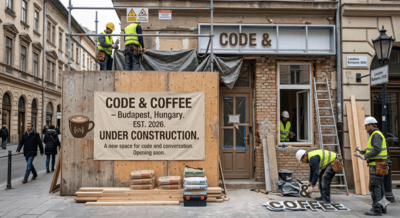

Rólunk
A Code&Coffee 2026-ban nyitotta meg kapuit azzal a céllal, hogy a város legfinomabb világos pörkölésű specialty kávéit kínálja egy nyugodt, inspiráló környezetben. Baristáink szenvedéllyel készítik el kedvenc italodat, legyen az egy klasszikus espresso, vagy egy krémes flat white. Kávébabjainkat közvetlenül kolumbiai és etióp farmerektől szerezzük be, melyeket hazai partnereink frissen pörkölnek, garantálva a fenntarthatóságot és a prémium minőséget. Ha kedvet kaptál, foglalj asztalt nálunk!

Találd meg a kedvenc ízeidet nálunk!
Sokan kérdezik: mi a titka a tökéletes kávénak? Mi a Code&Coffee-nál hiszünk abban, hogy a kávézás nem tudomány, hanem tiszta élvezet. Legyen szó a karakteres házunk eszpresszójáról vagy egy izgalmas, gyümölcsösebb variációról, segítünk eligazodni az ízek világában. Nem kell kávészakértőnek lenned ahhoz, hogy nálunk jól érezd magad - elég, ha szereted a minőséget. Nézd meg videónkat, és tudd meg, hogyan válogatjuk és készítjük el neked a legfrissebb pörköléseket!
videó részletes leírása
[0:00 - 0:09] Képi események: Pörgős, ritmusos zene indul. Egy barista
látható a kávézó pultja mögött, amint egy Workshop Coffee logóval
ellátott papírpoharat tesz le. Egy szűrőtartót helyez egy digitális mérlegre,
majd a darálóból friss kávét őröl bele. A kávéval teli szűrőt újra leméri, a kijelző 16,0
grammot mutat.
Narrátor hangja: "A kávé lényegében egy alapanyag. Bármelyik pillanatban a
világ különböző részein más-más íze van. Követni kell a termesztési és betakarítási
szezonokat, például Kenyában, Etiópiában, Ruandában, Dél- és Közép-Amerikában, hogy a lehető
legjobb kávét találjuk meg."
[0:10 - 0:21] Képi események: A narrátor (egy fiatal férfi) megjelenik a
képernyőn, és közvetlenül a kamerába beszél. Ezután a kávézó belső tere látható távolabbról,
ahol a barista épp kávét készít. Fehér csomagolású Workshop Coffee
kávébabos zacskók sorakoznak a pulton. Egy üvegtartályban kávébabokat láthatunk, majd egy
eszpresszógép világító digitális kijelzőjét. A barista ezután precízen letömöríti
a kávéőrleményt.
Narrátor hangja: "Mi beszerezzük ezt a kávét. Megpörköljük, és végül
felszolgáljuk. És mivel a folyamat minden egyes elemében részt veszünk, így meg tudjuk
találni ezeket a nagyszerű alapanyagokat..."
[0:22 - 0:47] Képi események: A narrátor újra a kamerába beszél. A vágás
után a barista a helyére rögzíti a szűrőtartót a kávégépben. Tejet önt egy fém tejkiöntőbe,
majd a gép gőzkarjával gőzölni kezdi. A sötét kávé lassan kifolyik egy fehér csészébe. A
barista a gőzölt tejet a kávéba önti, és egy szép latte art
mintát rajzol a
tejhabbal. Közben kiskanalat és csészealjat készít elő a pulton.
Narrátor hangja: "...elhozzuk őket, és pontosan annyit teszünk velük - se
többet, se kevesebbet -, amennyit kell, hogy ne rontsuk el. Igyekszünk betekintést nyújtani
a kínálatunkba. Mindig van a ház eszpresszója, de mindig kínálunk egy második eszpresszót
is, amit megkóstolhatsz. Ez egy kicsit más, egy kicsit játékosabb lesz. Csak tudnod kell,
mit szeretsz."
[0:48 - 0:59] Képi események: A narrátor ismét a képernyőn beszél. A
háttérben a barista letörli a kávégépet, és felszolgálja az italt. A videó végén egy
tökéletes, tejhabos kávé látható az asztalon egy nyugta mellett. A képsor a Workshop Coffee fekete-fehér logójával zárul.
Narrátor hangja: "Ha csak azt élvezed, hogy minden nap megiszol egy remek
csésze feketekávét, akkor csináld azt. Nincs szükség kifinomult ízlésre. Csak élvezned kell
a kávét, ennyi elég."